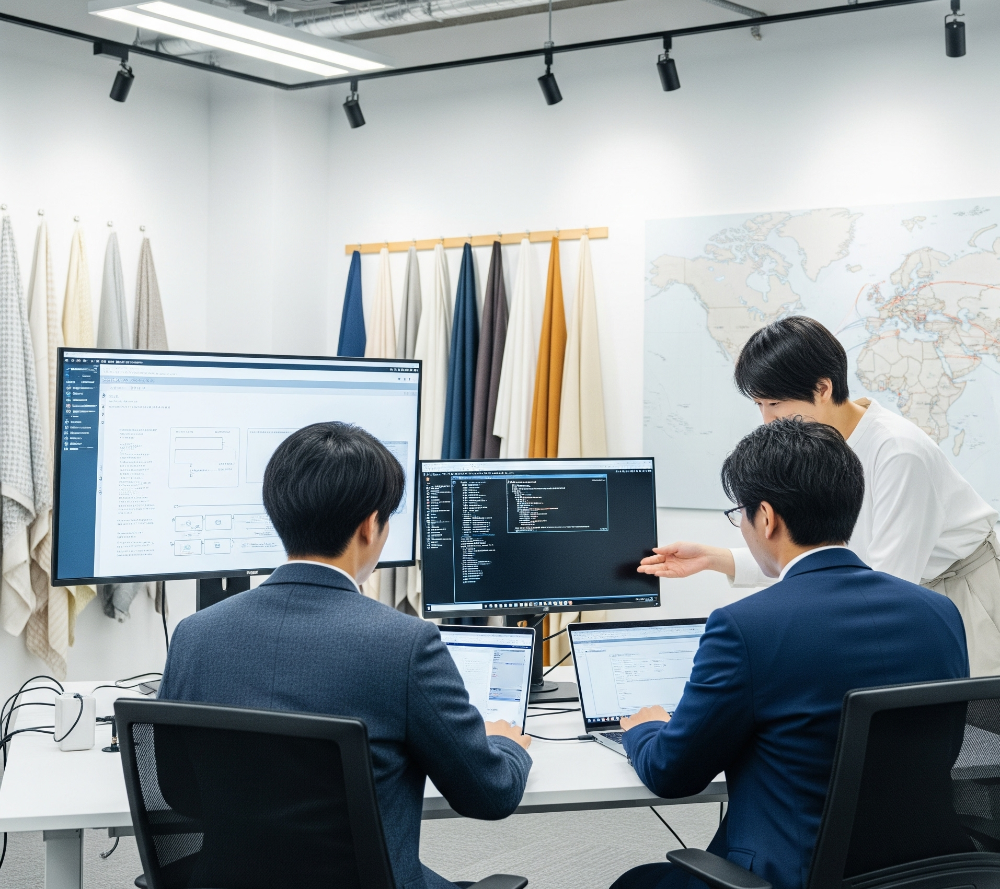
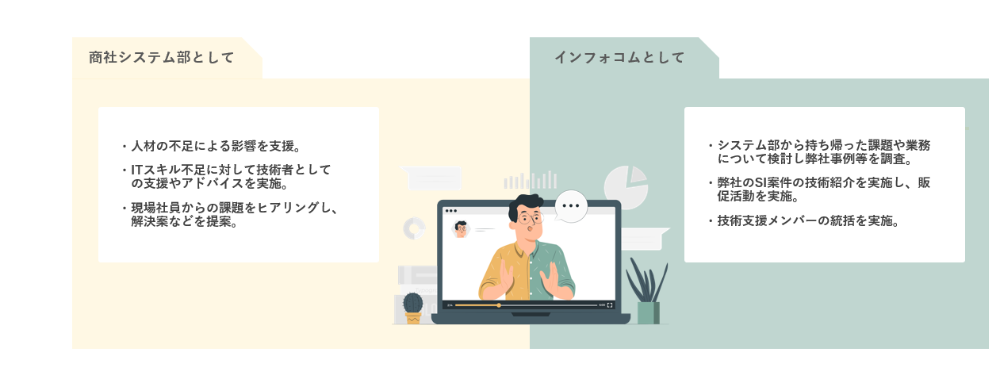
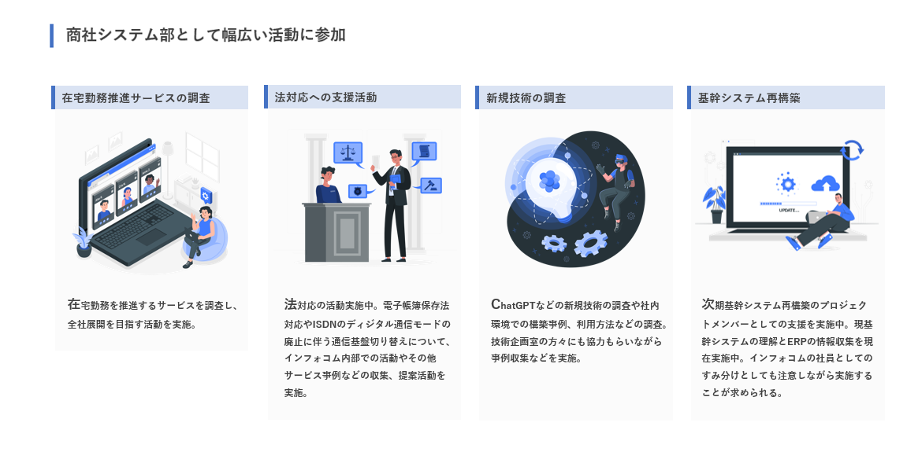
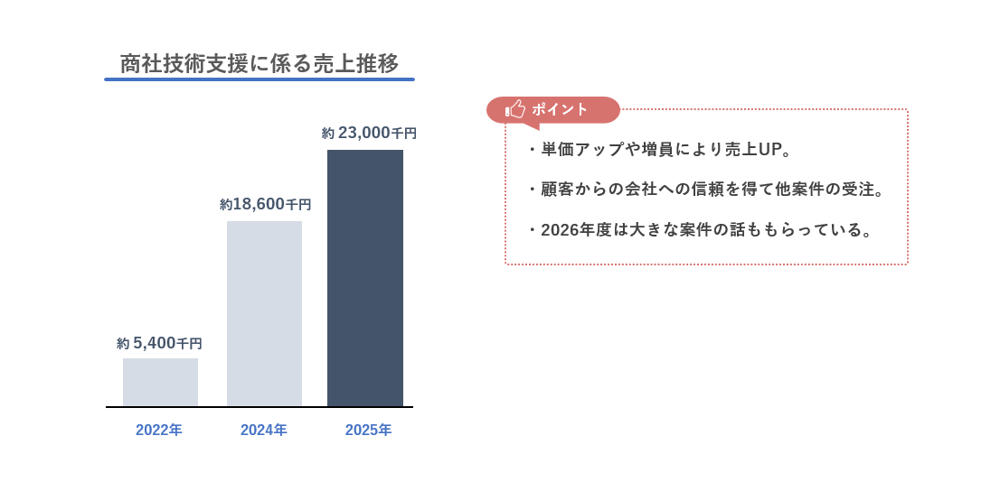

- PROFILE :
- 西崎慧 Nishizaki Kei
和歌山県和歌山市 出身
和歌山大学システム工学部メディアデザインメジャー 卒業
- CONTACT :
- nszkki.19981116@gmail.com
- ADDRESS :
- 大阪府大阪市
Osakashi, Osakafu Japan


■概要
元グループ会社である繊維商社に2年目から半常駐支援を実施している。
システム部メンバーの人手不足や技術者の高齢化が進んでいるということで支援することとなった。
新たな顧客に対しての信頼獲得を目指し商圏拡大を目標として新たな取り組みとして当初は単独で乗り込むようにアサインされた。
現在では複数名の支援体制かつ新たな案件の獲得にも繋げることができている。

常駐先の商社システム部については下記の課題があり、本プロジェクトではその課題を解決することを求められた。
・システム部メンバーの人手不足や今後の高齢化
・ITスキルを有した人材確保が難しい
・基幹システム再構築の方向性の迷走

常駐先の商社システム部について課題を解決するべく下記の大きな目的をもって支援を実施した。
・アウトソース拡大の支援を実施することでのリソース補完
・信頼関係を構築し、常駐先からの案件獲得や商圏拡大のきっかけを作る

本プロジェクトでは当初は単独であったが、現在は複数名の支援体制を整えており主任担当者として担当している。

ITの技術支援として最新技術の調査及び社内SEとしての支援活動を実施してる。所属会社の実績やノウハウを顧客に共有、提案することで約3年半支援を継続させて頂いている。

2022年度から技術支援をさせて頂いており、2024年度までに増員や案件の対応を実施し、着実に売り上げ拡大に貢献できている。
2025年度以降は基幹システムの再構築の支援とインフラ領域の支援への参入を目指し活動している。


本プロジェクトでは商圏拡大を大きな目的として取り組みとして単独で顧客システム部に乗り込んだ。
2年目で客先に一人で入り込むといったことは難易度が高く感じたが、上司からの私への期待を受けそれに応えようと取り組むことが出来た。
当初は顧客からの信頼を獲得することを目的とし、徐々に案件獲得や売り上げの拡大に向けた販促活動などを実施していった。
結果的に複数件の案件づくりや技術支援の増員を依頼されて売り上げ拡大につなげることが出来ている。
その他個人的にもSIerとして顧客の視点を学ぶといった経験にも繋がり成長できていると感じ、私自身顧客とのコミュニケーションや課題解決を検討する業務の方が向いている、かつやりがいを感じるようになった。
現職ではIT企業のSIerと>商社システム部の2つの顔を持っている。